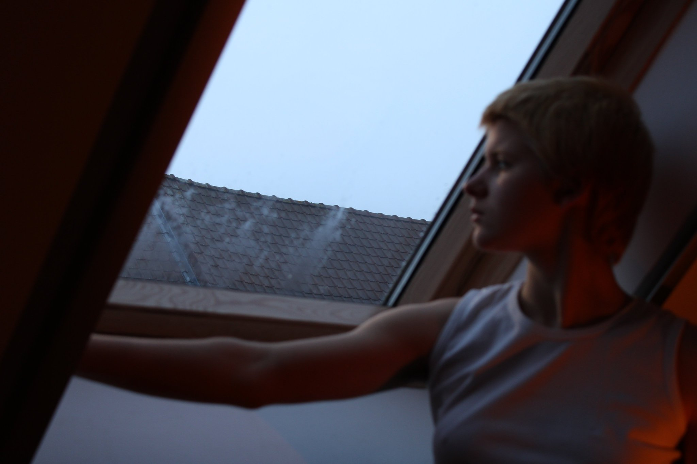
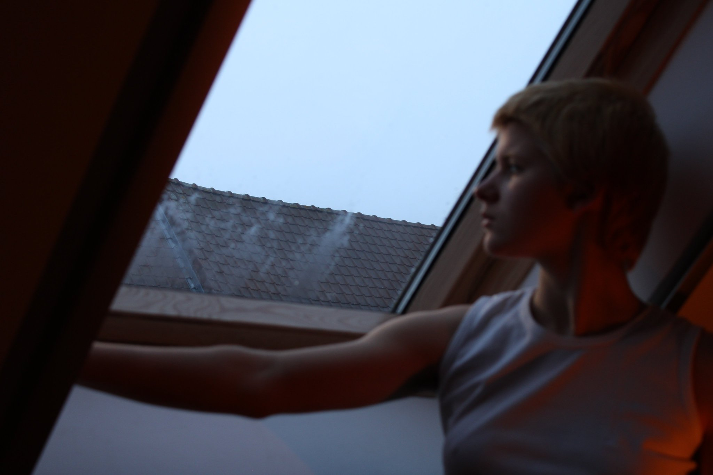

My name is Sara Schelstraete.
I am an art student in Bruges, Belgium. Feel free to contact me anytime if you’re interested in buying prints of my photographs. I will send them to you in a personalized package!
Here you can find a collection of my poems.
De moeder des aardes daalde neer
En haalde
Haar huilend kind
Uit brandende straten
Wij, de stervelingen,
Moederziel alleen en verraden
Tot as keerden wij weder
Hij bond me zijn steun, maar geen schouders om to rusten.
Hij nam me mijn witte maagdelijkheid af, hij spuugde mijn kleed vol met alle dingen onheilig.
Hij weende.
Flessen vol tranen bleven troosteloos achter met een bodem van verdriet, verdronken
Zij schuifelde over gladde ijswegen en viel onherroepelijk neer.
Troosten kan men niet !anger.
Dolle vrouwen zongen weemoedig hun lied,
het was het seizoen van de koning.
Hij aanschouwde het verderf en bespeelde zijn lier. Carmen 109
ze schotelt mij een liefde voor
lk droom en adem enkel haar
De ruimte tussen ons
Was eens vervuld van liefde
Maar neernt nu een andere gedaante aan
O god, laat mij ademen en dromen
Allen wet ik bezit is dit slechts karige verbond
Het valt van je gelaat niet of to lezen
Maar ik weet zeker dat Jupiter lonkt
Carmen 83 en 92
Haar tong is kwaad wanneer ze mijn woorden op haar lippen legt
Sommige dagen twijfel ik, maar vandaag weet ik het wel zeker
Liefde zit verdoezeld in haar mijmeringen
Haar symptomen zijn mij duidelijk
lk deel immers in haar smart
En ik zie dat het nu eenmaal zo gaat
Lesbia, kind,
Probeer het niet koortsachtig to verbergen
Verlies jezelf niet in die haat
 
